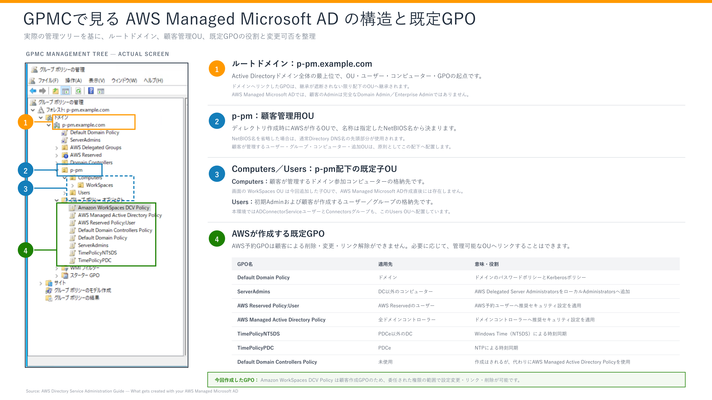

Amazon WorkSpaces 構築・OU・GPO
AD ConnectorをWorkSpacesへ登録し、パイロットWorkSpaceを作成する
ターゲットOU、権限委任、WSP管理テンプレート、GPOの作成・適用確認まで整理する
AWS Managed Microsoft AD・WorkSpaces OU／GPO構成概要
1. 文書の目的
本書は、お客様への構成説明に使用するため、AWS Managed Microsoft AD作成直後のOU／GPOと、本手順で追加したAmazon WorkSpaces用OU／GPOを分けて記載しております。実際の操作は、OU編とGPO編を参照してください
2. AWS Managed Microsoft AD作成直後の構成
AWS Managed Microsoft ADを作成すると、ドメインルートにAWS Delegated Groups、AWS ReservedおよびNetBIOS名と同名のOU（本環境ではp-pm）が作成されます。p-pm配下には、お客様が管理するComputers OUとUsers OUが作成され、初期Adminユーザーはp-pm\Usersに配置される
同時に、AWS管理の既定GPOが作成・適用されます。代表例は、ドメインへ適用されるDefault Domain Policy、非ドメインコントローラーのコンピューターへ適用されるServerAdmins、AWS予約ユーザーへ適用されるAWS Reserved Policy:User、ドメインコントローラーへ適用されるAWS Managed Active Directory Policyと時刻同期用GPO
次の図は、本手順完了後のGPMC管理ツリー部分を使用し、ルートドメイン、顧客管理用OU、既定の子OUおよびAWS作成GPOの役割と変更可否を示しています。画面上のWorkSpaces OUとAmazon WorkSpaces DCV Policyは今回追加した項目であり、AWS Managed Microsoft AD作成直後の既定項目ではない

説明上の注意
ドメイン直下には、Builtin、組み込みのComputersコンテナー、Domain ControllersなどのWindows Active Directory標準コンテナーも表示されます。AWSが作成するお客様管理領域p-pm\Computersとは別の場所であるため、作業時は完全なパスを確認します。AWS作成・管理のGPOは、お客様が変更、削除またはリンク解除する対象ではない
3. 今回追加したWorkSpaces用構成
本手順では、お客様管理OUp-pm\Computersの配下にWorkSpaces OUを作成し、AD Connectorの委任用グループConnectorsへ、同OU内のコンピューターオブジェクトを作成、削除、読み取りおよび書き込みする権限を委任した
Amazon WorkSpacesのターゲットOUをp-pm\Computers\WorkSpacesへ設定し、継続利用するAmazon WorkSpaces DCV Policyを同OUへ直接リンクしました。既定ドメインGPOの継承は維持され、その上にWorkSpaces固有GPOが適用される

最終状態は次のとおり
| 項目 | 最終状態 |
|---|---|
| WorkSpacesコンピューター格納先 | p-pm\Computers\WorkSpaces |
| ターゲットOU | OU=WorkSpaces,OU=Computers,OU=p-pm,DC=p-pm,DC=example,DC=com |
| 委任先グループ | Connectors |
| 委任権限 | コンピューターオブジェクトの作成、削除、読み取り、書き込み |
| 継続利用するGPO | Amazon WorkSpaces DCV Policy |
| GPOの直接リンク先 | p-pm\Computers\WorkSpaces |
| リンク設定 | 有効、強制なし、WMIフィルターなし、Authenticated Users |
| 設定値 | Configure clipboard redirection＝有効／Copy and Paste |
| 検証用GPO | WorkSpaces-Computer-Policyは作成・リンク・順序変更・削除の確認後に削除済み |
既存WorkSpaceへの影響
ターゲットOUを変更しても、既存WorkSpaceのコンピューターオブジェクトは自動移動されません。変更後に新規作成または再構築したWorkSpaceが対象
4. 詳細手順書
5. 参考資料
- 関連資料：AWS Managed Microsoft ADの2台ドメインコントローラー構成・役割
- 出典：AWS公式：AWS Managed Microsoft ADで作成される内容
- 出典：AWS公式：Windows WorkSpacesのグループポリシー管理
Amazon WorkSpaces作成・バンドル設定手順
1. 文書の目的
本書では、既存のAD ConnectorをAmazon WorkSpaces Personalへ登録し、顧客環境と同等の基本仕様を持つWindows WorkSpaceを作成して動作確認する手順を記載する
対象範囲は次のとおりである
- AD ConnectorをWorkSpacesへ登録
- WorkSpacesを配置する2サブネットを指定
- WorkSpaceのバンドル、実行モード、ストレージ、暗号化、ユーザーおよびタグを指定
- 作成完了、Active Directoryへのコンピューターオブジェクト作成およびクライアント接続を確認
- パブリックバンドルとカスタムイメージ／カスタムバンドルの違いを整理
本書の画像は、2026年9月2日にp-pm.example.comで実施した検証作業の画面である。顧客環境はworkspaces.example.comであり、画面中のDirectory ID、WorkSpace ID、ユーザー名、IPアドレス、バンドルID、VPC ID、サブネットIDおよびアカウント表示を、そのまま本番値として使用してはならない
画像の提出方針
新規構築時の前後関係は、全体構築作業順序を参照する。本書では最初にパイロットWorkSpaceを1台作成し、ログインとWSP管理テンプレート取得後に専用GPOを設定・確認してから、残りのWorkSpacesを展開する
2. 本書で使用する値の区分
値の取り違えを防ぐため、次の4区分を使用する
| 区分 | 意味 |
|---|---|
| 顧客環境・確認済み | 既存の顧客パラメータシート／構成資料で確認できる値 |
| 今回の検証値 | 2026年9月2日の検証環境画面だけで確認した値 |
| 構築時確認 | 本番作業時にAWSコンソール、申請または設計書で確定する値 |
| 未確認 | 現在の資料と画像では確定できず、推測してはならない値 |
重要
顧客資料の一部ではDirectory IDに不整合がある。Directory IDは資料から転記せず、現行AWSコンソールで、ドメイン名、VPC、ディレクトリタイプおよびDirectory IDを照合した値を正とする
3. Amazon WorkSpacesとバンドルの概要
WorkSpaceバンドルは、OS、ストレージ、コンピューティング、ストリーミングプロトコルおよびソフトウェア構成を組み合わせた起動テンプレートである
- パブリックバンドル（AWS提供の標準バンドル）：AWSが提供する標準バンドル。今回の検証作業ではこちらを使用した。顧客環境でパブリック／カスタムのどちらを採用するかは構築時に確認する
- カスタムイメージ：参照WorkSpaceのOS、インストール済みソフトウェアおよび設定を取り込んだもの
- カスタムバンドル：カスタムイメージに、コンピューティングタイプとストレージ設定を組み合わせたもの
今回の検証で選択した正式表示名はPowerPro with Windows 10 (Server 2022 based)である。「Windows 10」はコンソールのバンドル表示名に含まれる文字列であり、括弧内にServer 2022 basedと表示される。手順書・申請・証跡には、名称の一部を省略せず、コンソールの正式名称を記録する
4. 前提条件
- 対象リージョンがアジアパシフィック（東京）であること
- 対象VPC、WorkSpaces用2サブネット、ルートテーブルおよびネットワークACLが作成済みであること
- AWS Managed Microsoft ADのDC用SGに、対象VPCからの承認済み通信許可があること
- VPCピアリングと両方向のルートが設定済みであること
- 対象VPCのAD Connectorが「アクティブ」であること
- AD Connectorから対象Active Directoryのユーザーを検索できること
- WorkSpaces用のユーザーがActive Directoryに作成済みで、必要属性が設定されていること
- AD Connector用サービスアカウント作成・権限委任・運用手順が完了し、AD Connector専用サービスアカウントにWorkSpacesのコンピューターオブジェクトを対象OUへ作成する権限があること
- WorkSpacesコンピューター格納先OUと、そのOUへ適用するGPOが設計済みであること。専用OUを使用しない場合は、既定の格納先と適用GPOを確認すること
- Service Quotasで、対象リージョンのWorkSpaces数および必要なバンドルファミリーの上限に余裕があること
- 実行モード、暗号化、KMSキー、タグ、セルフサービス権限、インターネットアクセス方式およびローカル管理者権限が承認済みであること
- WorkSpacesクライアントから必要なAWSエンドポイントへ到達できること
5. 顧客環境パラメータ
5.1 顧客資料で確認済みのWorkSpace基本仕様
| 項目 | 顧客環境の確認値 | 状態 |
|---|---|---|
| WorkSpacesタイプ | Personal（個人） | 構成から確認 |
| コンピューティングタイプ | PowerPro | 確認済み |
| OSベース | Windows Server 2022 | 確認済み |
| ストリーミングプロトコル | DCV（旧WSP） | 確認済み |
| ルートボリューム | 80GB | 確認済み |
| ユーザーボリューム | 50GB | 確認済み |
| ディレクトリのDNS名 | workspaces.example.com |
確認済み |
| 正確なバンドル名／バンドルID | ［構築時確認］ | 顧客資料では未確認 |
| 実行モード | ［構築時確認］ | AutoStop／AlwaysOnを申請で確定 |
| AutoStop時間 | ［構築時確認］ | 実行モードがAutoStopの場合に確定 |
| ルート／ユーザーボリューム暗号化 | ［構築時確認］ | 顧客資料では未確認 |
| KMSキー | ［構築時確認］ | 暗号化する場合に確定 |
| タグ | ［構築時確認］ | 命名・課金・運用ルールに従う |
| WorkSpaces格納先OU | ［構築時確認］ | 実DNは未確認 |
| セルフサービス権限 | ［構築時確認］ | コスト影響を含め承認が必要 |
PowerProはWindows Server 2022とDCVをサポートします。最新の対応状況は、構築時にバンドル一覧とコンソールで再確認する
5.2 VPC別のWorkSpaces用サブネット
| 対象 | WorkSpaces用サブネット1 | WorkSpaces用サブネット2 | 状態 |
|---|---|---|---|
| VPC003 | 192.168.227.0/25（003-003a） |
192.168.227.128/25（003-003c） |
設計値。登録画面で再確認 |
| VPC004 | 192.168.229.0/25（004-003a） |
192.168.229.128/25（004-003c） |
設計値。登録画面で再確認 |
| VPC005 | 192.168.231.0/25（005-003a） |
192.168.231.128/25（005-003c） |
設計値。登録画面で再確認 |
| VPC006 | 192.168.233.0/25（006-003a） |
192.168.233.128/25（006-003c） |
設計値。登録画面で再確認 |
AD Connector用の002a/cサブネットと、WorkSpaces用の003a/cサブネットを取り違えない。WorkSpaces登録時には、異なるアベイラビリティーゾーンにあるWorkSpaces用2サブネットを選択する
VPC003～006はそれぞれ別のAD Connectorを使用する構成である。6章以降のディレクトリ登録およびWorkSpace作成は、対象VPCごとに繰り返す。作業記録には、対象VPC、現行コンソールで確認したDirectory ID、選択した2サブネットおよび対応するサービスアカウントの管理番号を残し、別VPCの値を流用しない
5.3 今回の検証画像で確認した値
| 項目 | 検証値 | 顧客本番での扱い |
|---|---|---|
| ドメイン | p-pm.example.com |
使用しない |
| ユーザー | sampleadmin |
使用しない |
| バンドル名 | PowerPro with Windows 10 (Server 2022 based) |
正式名称を構築時に再確認 |
| バンドルID | wsb-391xpys5j |
検証時点の値。固定値にしない |
| コンピューティング | 8 vCPU／32GiB | PowerProの画面表示として確認 |
| ストリーミング | DCV（旧WSP） | 顧客仕様と一致 |
| 実行モード | AutoStop／1時間 | 検証値。顧客採用値は未確認 |
| ルート／ユーザーボリューム | 80GB／50GB | 顧客仕様と一致 |
| 暗号化 | ルート・ユーザーとも未選択 | 検証値。顧客採用値は未確認 |
6. WorkSpacesへAD Connectorを登録する
AWS Directory ServiceでAD Connectorを作成しただけでは、WorkSpacesで使用できない。対象AD ConnectorをWorkSpaces Personalへ登録し、WorkSpacesを起動するサブネットを指定する。VPC003～006の各AD Connectorについて、本章を1ディレクトリずつ実施する
6.1 登録前の状態を確認する
- Amazon WorkSpacesコンソールを開く
- 左ペインで「ディレクトリ」を選択
- WorkSpacesタイプが「個人」であることを確認
- 登録済みディレクトリが0件、または対象AD Connectorが登録済み一覧にないことを確認
- 後続の登録ウィザードで対象AD Connectorを、Directory ID、タイプ、ドメイン、VPCおよびステータスにより特定

画像の見方
① 登録済みディレクトリが0件であることを確認します。② 画面右上の「ディレクトリの作成」を押下する
6.2 ディレクトリを登録する
- 「ディレクトリの作成」または対象AD Connectorの登録操作を選択
- WorkSpacesタイプで「個人」を選択
- WorkSpaceデバイス管理で「AWS Directory Service」を選択
- 対象のAD Connectorを選択
- 5.2のWorkSpaces用2サブネットを選択します。2サブネットが異なるアベイラビリティーゾーンにあることを確認
- 「セルフサービスアクセス許可」を選択
| 選択 | 影響 |
|---|---|
| はい | ユーザーが再構築、ボリューム、コンピューティングタイプ、実行モード等を変更できる。料金へ影響する場合がある |
| いいえ | 管理者が変更を管理する。顧客採用値は構築申請で確認する |
- 「登録」を選択
- 登録状態が
REGISTERINGを経て、登録済みになるまで待機
不足証跡
今回は、ディレクトリ登録フォームと2サブネットの選択画面を取得していない。本番構築時は、対象Directory ID、VPC、2つのWorkSpaces用サブネット、セルフサービス設定および登録ボタンを確認できる画像を追加取得する
6.3 登録完了を確認する
- 対象ディレクトリの登録状態が「登録済み」であることを確認
- ディレクトリタイプがAD Connector、WorkSpacesタイプがPersonalであることを確認
- 対象VPCおよびドメインが正しいことを確認

画像の見方
赤枠のステータスが「登録済み」になっていることを確認する
- VPCコンソールで、対象ディレクトリに関連する
<Directory ID>_workspacesMembers形式のSGが存在するか確認します。顧客パラメータシートにはこのSGが記録されているが、現行の名称、ルールおよび関連付けはコンソールを正と - AWSが作成したSGルールを、根拠なく削除または置換しないでください
6.4 OUとGPOを確認する
WorkSpacesを作成しても、専用のWorkSpaces OUや顧客独自GPOは自動作成されない。カスタムOUを指定しない場合、WorkSpaceのコンピューターアカウントはディレクトリの既定のコンピューターOUへ配置される。ディレクトリごとに選択できるターゲットOUは1つで、新しく作成または再構築したWorkSpacesへ反映される
- WorkSpacesコンソールで「ディレクトリ」を開く
- 対象ディレクトリを選択
- 「ターゲットドメインと組織単位」を確認
- 専用OUを使用する場合は、承認済みのOU識別名を選択して保存
Connectorsへ委任したOUと同じであることを確認- GPOを適用する場合は、そのOUまたは承認済みの親OUへGPOをリンクします。WorkSpacesコンソールでGPOを作成・管理するものではない
7. WorkSpaceを作成する
7.1 作成を開始する
- WorkSpacesコンソールの左ペインで「WorkSpaces」を選択
- 「WorkSpacesを起動」から「個人」を選択
- 「WorkSpacesの作成」を選択
- 「WorkSpaceをどのように作成しますか？」で「手動で設定」を選択します。既存WorkSpaceのコピーや推奨事項による自動選択は、別途承認された場合だけ使用

画像の見方
① 「個人」タブを選択します。② 画面右上の「WorkSpacesの作成」を押下する
「既存のWorkSpaceからコピー」を使用する場合
この選択肢は、指定した既存WorkSpaceの設定を新しいWorkSpaceへ複製するための経路です。新しく作成したカスタムバンドルを選択した証跡にはなりません。カスタムバンドルの検証では「手動で設定」を選択し、カスタムバンドル名とBundle IDを明示的に指定する
7.2 バンドルを選択する
- AWS提供のパブリックバンドルを使用する場合は、「ベースのWorkSpacesバンドルを使用」を選択します。カスタムバンドル採用時は11章を参照
- 検索またはフィルターで、顧客仕様に合うPowerPro、Windows Server 2022ベース、DCV対応のバンドルを選択
- コンソールに表示された正式名称、バンドルID、vCPU、メモリ、OS、言語およびストリーミングプロトコルを記録
- 「バンドルの詳細」を開き、仕様を確認
今回の検証では次を選択した
| 項目 | 検証画面の値 |
|---|---|
| 正式名称 | PowerPro with Windows 10 (Server 2022 based) |
| バンドルID | wsb-391xpys5j |
| コンピューティング | 8 vCPU／32GiB |
| 言語 | 日本語 |
| ストリーミング | DCV（旧WSP） |

画像の見方
① 「手動で設定」を選択します。② 「WorkSpacesバンドルを使用」を選択します。③ 承認済みのバンドルを選択します。④ 実行モードを選択し、⑤ AutoStopの場合は停止までの時間を指定します。⑥ 対象のDirectory ID・ドメイン・組織名を照合してディレクトリを選択します。⑦ 申請されたユーザーを選択します。⑧ ルート80GB／ユーザー50GBを選択します。⑨ ルート／ユーザーボリュームの暗号化状態が承認済み設計と一致することを確認する
バンドルIDの扱い
バンドルの提供状況、名称およびIDは変更される可能性がある。顧客資料では正確なIDを確定できないため、wsb-391xpys5jを本番固定値として転記せず、構築時のコンソール表示を記録する
7.3 バンドル詳細とストレージ採用値を区別する
「バンドルの詳細」でOS、プロトコル、コンピューティングおよび既定ストレージを確認する

画像の見方
赤枠のバンドルIDと言語を確認し、作業記録へ控える
図5のバンドル詳細には、ルート175GB／ユーザー100GBが表示される。一方、今回のWorkSpace作成ではカスタマイズ欄でルート80GB／ユーザー50GBを採用し、作成後も80GB／50GBであることを確認した。次を混同しない
| 区分 | ルート | ユーザー |
|---|---|---|
| 図5のバンドル詳細表示 | 175GB | 100GB |
| 顧客環境の採用仕様 | 80GB | 50GB |
| 今回の検証WorkSpace | 80GB | 50GB |
7.4 実行モードを選択する
実行モードは申請・利用頻度・料金見積りに基づいて選択する
| モード | 特徴 | 主な想定 |
|---|---|---|
| AlwaysOn | 固定月額。常時利用を想定 | フルタイムの主要デスクトップ |
| AutoStop | 時間課金。指定した切断時間後に停止するが、停止中も固定インフラストラクチャコストが残る | 断続的・短時間の利用 |
今回の検証値はAutoStop／1時間である。顧客本番の実行モードは既存資料で確認できないため、構築申請で確定する。AutoStopの既定停止時間は1時間だが、単に画面をロックしただけでは切断と判定されず、自動停止しない場合がある
7.5 ディレクトリとユーザーを選択する
- 登録済みの対象AD Connectorを、Directory ID、ドメインおよびVPCで選択
- Active Directoryから対象ユーザーを検索
- 申請されたユーザーと一致することを確認
- 1ユーザーに重複したPersonal WorkSpaceを作成しないことを確認
検証画像ではp-pm.example.comとsampleadminを使用している。顧客本番では承認済みユーザーへ読み替え、ユーザー名、メールアドレスおよびWorkSpace IDを外部共有版へ掲載しない
7.6 ストレージと暗号化を設定する
- カスタマイズ欄で、ルートボリュームを80GB、ユーザーボリュームを50GBに設定
- 暗号化要件を申請で確認
- 暗号化する場合は、ルート／ユーザーの対象とKMSキーを選択し、キーの利用権限を確認
- 暗号化しない場合も、未選択が承認済み設計と一致することを記録
今回の検証ではルート／ユーザーとも暗号化を選択していないが、顧客本番の採用値は未確認である
作成後に変更できない項目への注意
WorkSpace作成後、ルート／ユーザーボリュームは拡張できるが縮小できない。顧客仕様が80GB／50GBである場合、誤って175GB／100GB等で作成したWorkSpaceを後から80GB／50GBへ戻すことはできず、対象WorkSpaceを終了して正しい値で再作成する。また、暗号化なしで作成した既存WorkSpaceへ後から暗号化を追加すること、および暗号化済みWorkSpaceから暗号化を解除することはできない。ストレージと暗号化は作成前の最終確認項目とする
7.7 タグと追加設定を確認する
少なくとも次を構築申請と照合する
Nameまたは運用上の識別タグ- 環境、システム、所有者、コスト配賦、用途等の必須タグ
- ローカル管理者権限
- セルフサービス権限
- インターネットアクセス方式
- WorkSpaces用の追加SG
- ネストされた仮想化
- MFA／RADIUS、証明書認証、IAM認証等の認証要件
- メンテナンスモードとデバイスアクセス制御
今回の画像ではこれらの最終選択を確認できないため、本番値を推測しないでください
7.8 最終確認して作成する
- バンドル正式名称とIDを確認
- PowerPro、Windows Server 2022ベース、DCV、80GB／50GBが顧客仕様と一致することを確認
- 実行モード、停止時間、暗号化、KMSキーおよびタグを申請と照合
- ディレクトリとユーザーが正しいことを確認
- 「WorkSpacesの作成」を選択
不足証跡
今回は、タグ、暗号化を含む全設定の最終確認画面と、作成ボタン押下直前の画面を取得していない。本番構築時は、秘密情報を含めずに追加取得する
8. 作成状態を確認する
- 一覧に対象WorkSpaceが表示され、ステータスが「保留中」または
PENDINGであることを確認

画像の見方
赤枠のステータスが「構築中」であることを確認し、作成処理が終わるまで待機する
画面を適宜更新し、ステータスが「利用可能」または
AVAILABLEになるまで待機エラーになった場合は、10章の確認を行う
作成後の一覧で、次を確認します
- WorkSpace ID
- ユーザー
- バンドル／コンピューティングタイプ
- ルート／ユーザーボリューム
- OS
- 実行モード
- ストリーミングプロトコル
- IPアドレス／サブネット
- 暗号化状態

画像の見方
赤枠のステータスが「使用可能」になっていることを確認します。これがWorkSpaceを利用できる状態
9. 作成後の総合確認
9.1 AWS側
| 確認項目 | 期待結果 |
|---|---|
| WorkSpaceステータス | AVAILABLE／利用可能 |
| Directory ID | 対象VPCのAD Connectorと一致 |
| バンドル | 承認済みのPowerPro／Windows Server 2022ベース／DCV |
| ストレージ | ルート80GB／ユーザー50GB |
| 実行モード | 構築申請と一致 |
| 暗号化／KMSキー | 構築申請と一致 |
| IP／サブネット | 登録したWorkSpaces用サブネットの範囲 |
| SG | 自動作成SGおよび承認済み追加SGが意図どおり関連付く |
| タグ | 必須タグが不足していない |
9.2 Active Directory側
- ADUCで、WorkSpaceのコンピューターオブジェクトが承認済みOUへ作成されていることを確認
- 専用OUを指定した場合は、既定の
ComputersコンテナやUsersOUへ作成されていないことを確認します。既定OUを採用した場合は、Computersへの作成が期待結果となるため、設計記録と一致することを確認 - 対象OUへリンクしたコンピューターGPOと、ユーザーの所属OUへリンクしたユーザーGPOを確認
- WorkSpace上で
gpresult /h等を使用し、意図したGPOの適用結果を確認
グループポリシーの管理は、WorkSpacesコンソールではなく、ドメイン参加済み管理端末の「グループポリシーの管理」から行う。WorkSpaces作成時に顧客独自GPOが自動で追加・リンクされることはない
9.3 クライアント接続
- WorkSpacesクライアントをインストール
- 対象ディレクトリの登録コードを入力
- Active Directoryのユーザー名とパスワードでサインイン
- デスクトップが表示され、業務に必要なネットワーク、DNS、時刻同期、ファイル共有およびアプリケーションへ到達できることを確認
- 切断、再接続、再起動およびAutoStop採用時の停止・再開を確認
AD Connectorまたは既存ADユーザーを使用する場合、招待メールは自動送信されない。管理者が登録コード、クライアント入手先および初回接続方法を安全な経路で案内する
9.4 ユーザーパスワードの期限切れとリセット
AD Connector経由で既存Active Directoryのユーザーを使用する場合、WorkSpacesクライアントの「パスワードを忘れた場合」からセルフリセットできない。ユーザーのパスワードポリシー、期限、通知およびリセットはActive Directory側で管理する
- 既定ドメインポリシーまたはきめ細かなパスワードポリシーについて、有効期限、対象ユーザーおよび例外を確認する
- パスワード期限の事前通知、利用者への連絡方法、リセット担当者およびエスカレーション先を運用台帳へ定める
- 管理者が既存ユーザーのパスワードをリセットする際は、「ユーザーは次回ログオン時にパスワード変更が必要」を有効にしない。この設定ではWorkSpacesへ接続できなくなるため、仮パスワードでWorkSpaceへサインインした後、Windows上で利用者自身がパスワードを変更する
- パスワード変更後はWorkSpacesへの再接続を確認し、期限、変更日および次回確認日を記録する
環境で過去に確認した42日という有効期限は、当該時点のポリシーに基づく実測値として扱う。現在値はActive Directoryのポリシーと対象ユーザーの結果セットを再確認し、すべての環境へ一律に適用される値として記載しない
10. 作成失敗時の確認順序
- AD Connectorが「アクティブ」か
- WorkSpacesへのディレクトリ登録が完了しているか
- WorkSpaces用サブネットを、AD Connector用サブネットと取り違えていないか
- 2サブネットが異なるアベイラビリティーゾーンにあるか
- VPCピアリングと往復ルートがあるか
- Managed AD側DC用SGに対象VPCの承認済み許可があるか
- サービスアカウントが有効、未ロック、パスワード期限内か
- AD Connectorへ登録した認証情報がAD側の現在値と一致するか
Connectorsへ対象OUのコンピューター作成・削除・読み取り・書き込み権限があるか- WorkSpacesターゲットOUと委任先OUが一致するか
- 対象ユーザーが有効で、必要属性を読み取れるか
- Service Quotas、IPアドレス空き数およびKMSキー権限に不足がないか
- AWS Health Dashboard、CloudTrailおよびWorkSpacesのエラーメッセージを確認したか
11. カスタムイメージ／カスタムバンドルを使用する場合
業務アプリケーション、共通のOS設定またはセキュリティ製品をあらかじめ組み込む場合は、Amazon WorkSpacesカスタムイメージ・バンドル作成・共有手順を参照する
同手順には、次の内容を記載する
- イメージ作成専用WorkSpaceの準備
- Image Checkerの実行
- カスタムイメージおよびカスタムバンドルの作成・更新
- ADグループ、Directory IDおよびBundle IDを使用した複数環境への展開管理
- 他のAWSアカウントへのイメージ共有
- 共有先AWSアカウントでのイメージコピー、バンドル作成および検証
本書の図4および図5はAWS提供のパブリックバンドルを選択した検証画像です。カスタムバンドルを使用する場合は流用せず、カスタムバンドル名、Bundle ID、元イメージIDおよび構成を確認できる画像を取得する
今回の検証では、カスタムイメージwsi-dvdtfbh29およびカスタムバンドルwsb-757191hn0が「利用可能」となるところまで確認しています。ただし、バンドル一覧にはPowerProと80GB／50GBが表示されないため、別紙10章のCLIまたは詳細画面で実値を確認し、そのカスタムBundle IDを選択した新規WorkSpaceで検証を完了してから本番展開する
12. 運用上の注意
12.1 AD Connectorの未使用
AD Connectorに30日間連続してWorkSpacesが関連付かない場合、WorkSpacesから自動的に登録解除され、Directory Serviceの料金条件に従う課金へ移ることがある。検証後にWorkSpaceを削除する場合は、ディレクトリ登録状態と課金影響も確認する
12.2 サービスアカウント
- パスワード期限、次回更新日、担当者および保管先を運用台帳で管理する
- AD側でパスワードを変更した直後に、AD Connector側の認証情報も更新する
- 期限切れ、ロックまたは認証情報不一致があると、新規WorkSpaceの作成やユーザー検索へ影響する可能性がある
- 作業前に、対象VPC、AD Connector、サービスアカウントの対応をAD Connector作成手順の作業記録で照合し、別コネクタの認証情報を更新しない。1アカウントを複数コネクタで共有している場合は、影響する全コネクタを同一変更作業の対象とする
12.3 容量・料金・バンドル
- 実行モード、コンピューティングタイプ、ボリュームサイズ、セルフサービス変更およびアプリケーションは料金へ影響する
- AutoStopは停止中も固定インフラストラクチャコストが残る。関連コストをなくすにはWorkSpaceの削除が必要である
- コンソール画像内の料金は取得時点の参考値であり、最新料金を構築時に確認する
- バンドル名、IDおよび提供状況を構築時に再確認する
- 80GB／50GBが選択可能な範囲か、コンソールの検証エラーがないことを確認する
13. 切り戻し・削除
13.1 作成直後に誤りを発見した場合
- ユーザーへ登録コードを案内しないでください
- 対象WorkSpace ID、ユーザー、Directory IDおよび誤設定内容を記録
- 他のWorkSpacesと取り違えていないことを確認
- 対象WorkSpaceだけを終了
- AD側で対象コンピューターオブジェクトの状態を確認
- 正しい設定で再作成
13.2 ディレクトリ登録を解除する場合
- 対象ディレクトリを使用するすべてのWorkSpacesが削除済みであることを確認
- 関連するアプリケーションと依存サービスがないことを確認
- WorkSpacesコンソールでディレクトリ登録を解除
- AD Connectorを引き続き使用するか、削除するかを別申請で判断
- Managed AD側DC用SGの追加ルールを削除する場合は、すべての依存関係を確認
稼働中のWorkSpacesがある状態で、ディレクトリ登録、AD Connector、サービスアカウント、OU委任またはSGルールを先に削除しないでください
14. 作業完了チェックリスト
| 確認項目 | 結果 |
|---|---|
| 顧客環境と検証環境の値を区別した | □ |
| Directory IDを現行AWSコンソールで照合した | □ |
| WorkSpaces用2サブネットを異なるAZから選択した | □ |
| セルフサービス権限を承認済み設計と照合した | □ |
| ターゲットOUとサービスアカウントの委任先OUが一致する | □ |
| バンドル正式名称、ID、OS、PowerPro、DCVを確認した | □ |
| ルート80GB／ユーザー50GBを指定した | □ |
| 実行モードとAutoStop時間を申請と照合した | □ |
| 暗号化対象とKMSキーを申請と照合した | □ |
| ストレージの縮小不可と、作成後の暗号化追加／解除不可を確認した | □ |
| 必須タグと追加設定を確認した | □ |
| WorkSpaceがAVAILABLE／利用可能になった | □ |
| IPアドレスがWorkSpaces用サブネットの範囲である | □ |
| コンピューターオブジェクトが承認済みOUへ作成された | □ |
| 意図したGPOの適用結果を確認した | □ |
| WorkSpacesクライアントからサインインできた | □ |
| パスワード期限通知、リセット担当者および復旧手順を確認した | □ |
| AD Connector利用時の手動招待を実施した | □ |
| 作業証跡にパスワード、不要な個人情報および秘密情報がない | □ |
15. 追加取得を推奨する証跡
- ディレクトリ登録フォームで対象AD Connectorを選択した画面
- 2つのWorkSpaces用サブネットとセルフサービス権限の選択画面
- ターゲットドメインとOUの設定画面
- タグ、暗号化、KMSキー、ストレージを含む最終確認画面
- 作成ボタン押下直前の画面
- ブラウザ倍率表示のないAVAILABLE画面
- ADUCでWorkSpaceコンピューターオブジェクトが対象OUにある画面
gpresult等によるGPO適用結果- WorkSpacesクライアントの登録コード入力画面と接続完了画面
16. 参考資料
Amazon WorkSpaces用OU作成・権限委任・ターゲットOU設定手順
1. 文書の目的
本書では、AWS Managed Microsoft ADへAD Connector経由で参加するWindows WorkSpacesについて、次のOU関連作業を実施する
- WorkSpacesコンピューター専用OUを作成
Connectorsグループへ必要最小限のコンピューター操作権限を委任- Amazon WorkSpaces PersonalのターゲットOUを設定
- 新しい検証用WorkSpaceのコンピューターオブジェクトが、指定OUへ自動配置されたことを確認
本書は、検証環境で取得した画像と確認済みの画面遷移を基に作成しております。本番作業では、各画像の値を承認済みの環境値へ読み替えてください
2. OU構成と役割
p-pm.example.com
└─ p-pm お客様管理OU
├─ Computers
│ └─ WorkSpaces WorkSpacesコンピューター格納先OU
└─ Users
├─ ADConnectorService AD Connectorサービスアカウント
├─ Connectors 委任用セキュリティグループ
└─ WorkSpaces利用ユーザー ユーザー格納先p-pm\Computersは、お客様管理OUp-pm配下のOUです。ドメイン直下にある組み込みのComputersコンテナーとは別物であるため、選択時にパスを必ず確認する
| 対象 | 配置・設定先 | 説明 |
|---|---|---|
ADConnectorServiceユーザー |
p-pm\Users |
サービスアカウントの配置場所 |
Connectorsグループ |
p-pm\Users |
委任を受けるグループの配置場所 |
| コンピューター作成権限 | p-pm\Computers\WorkSpaces |
権限の委任先 |
| WorkSpacesターゲットOU | p-pm\Computers\WorkSpaces |
新規または再構築時のコンピューター作成先 |
サービスアカウントとグループの「配置場所」、コンピューター作成権限の「委任先」は別の概念です。ADConnectorServiceとConnectorsをUsersに置いたまま、WorkSpacesコンピューター作成権限をWorkSpaces OUへ委任する
本書で使用するOUのDNは次のとおり
OU=WorkSpaces,OU=Computers,OU=p-pm,DC=p-pm,DC=example,DC=com3. 前提条件と管理環境
- AWS Managed Microsoft ADとAD Connectorが「アクティブ」であること
- AD ConnectorがAmazon WorkSpacesへ登録済みであること
- 対象ドメインに参加したWindows管理端末を使用すること
- ADUCとActive Directory PowerShellモジュールを使用できること
- AWS Managed Microsoft ADの
Admin、またはOU作成と権限委任に必要な権限を持つ管理ユーザーを使用すること - Directory ID、AD Connector、VPC、利用者および変更対象OUを作業票で照合すること
管理ツールはすべての利用者用WorkSpaceへ導入する必要はありません。本番では、管理専用WorkSpaceまたはドメイン参加済み管理用EC2から実施する
3.1 WorkSpaceへ接続する
検証用WorkSpaceへ接続し、Windowsデスクトップが表示されることを確認する

画像の見方
この画像に赤枠や番号はありません。WorkSpacesクライアントのデスクトップが表示され、接続が完了したことを確認する
3.2 ドメイン参加を確認する
サーバーマネージャーの「ローカルサーバー」で、「ドメイン」がp-pm.example.comであることを確認した

画像の見方
① コンピューター名とドメイン名を確認し、対象WorkSpaceが正しいドメインへ参加していることを照合する
画像の提出方針
図2にはホスト名、内部ドメイン名およびWindowsの製品IDが表示されている。本資料の検証環境は提出前に削除するため追加マスキングは行わないが、提出対象が当該検証環境であることを確認する
PowerShellで確認する場合は、次を実行する
Get-CimInstance Win32_ComputerSystem |
Select-Object Name, Domain, PartOfDomain期待結果は、PartOfDomainがTrueで、Domainが対象ドメインと一致することである
3.3 管理ツールの確認
検証環境では、管理者PowerShellから次のコマンドを実行済みである
Install-WindowsFeature RSAT-ADDS,GPMCInstall-WindowsFeatureはWindows Serverで使用するコマンドである。図2の検証WorkSpaceはWindows Server 2022ベースのため使用できた。Windows 10／11ベースの管理端末では同コマンドを使用せず、OSに対応する「オプション機能」またはRSAT導入手順を使用する
導入状態を確認する
Get-WindowsFeature RSAT-ADDS,GPMC |
Select-Object DisplayName, InstallState期待結果は、両機能のInstallStateがInstalledであること。次のコマンドで各管理ツールを起動できる
dsa.msc
gpmc.msc4. 実施前に既存WorkSpaceの現在位置を確認する
ターゲットOUを変更する前に、現在の検証用WorkSpaceがどのOUにあるかを記録する
4.1 WorkSpace自身から確認する場合
AWS Managed Microsoft ADのAdminまたは必要な読取り権限を持つドメインユーザーでPowerShellを開き、次を実行する
whoami
Get-ADComputer -Identity $env:COMPUTERNAME `
-Properties DistinguishedName |
Format-List Name, DistinguishedName4.2 管理端末から確認する場合
Get-ADComputer -Identity "<WorkSpaceのコンピューター名>" `
-Properties DistinguishedName |
Format-List Name, DistinguishedName出力されたDistinguishedNameを作業記録へ保存する
サーバーは、クライアントの資格情報を拒否しましたと表示された場合は、次の順で切り分ける
whoamiでローカルアカウントではなく対象ドメインのユーザーか確認- 別の正常な管理セッションから、対象アカウントの有効化、ロック、アカウント期限、パスワード期限および「次回ログオン時に変更」を確認
- 対象端末のDNS参照先がManaged ADのDNSであり、ドメインコントローラーのSRVレコードを解決できるか確認
- クライアントとドメインの時刻差を確認
- コンピューターのセキュアチャネルを確認
Resolve-DnsName -Type SRV '_ldap._tcp.dc._msdcs.p-pm.example.com'
w32tm /query /status
Test-ComputerSecureChannel -Verbose対象アカウントの状態は、必要な権限を持つ別の管理セッションで確認する
Get-ADUser -Identity '<確認対象ユーザー>' `
-Properties Enabled,LockedOut,AccountExpirationDate,PasswordExpired,PasswordLastSet |
Select-Object SamAccountName,Enabled,LockedOut,AccountExpirationDate,PasswordExpired,PasswordLastSet既存WorkSpaceへの影響
WorkSpaces側のターゲットOUを変更しても、既存WorkSpaceのコンピューターオブジェクトは自動移動されない。新しいOUは、変更後に新規作成または再構築したWorkSpaceへ適用される
5. WorkSpaces用OUを作成する
5.1 ADUCから作成する
- AWS Managed Microsoft ADの
Adminまたは必要な権限を委任された管理ユーザーで「Active Directory ユーザーとコンピューター」を開く p-pm.example.comを展開- お客様管理OU
p-pmを展開 p-pm\Computersを選択- 右クリックし、「新規作成」から「組織単位（OU）」を選択
- 名前へ
WorkSpacesを入力 - 「コンテナーを誤って削除されないように保護する」を有効のままに
- 「OK」を選択
- ツリー上に
p-pm\Computers\WorkSpacesが表示されることを確認
p-pm\Computersを右クリックし、組織単位を新規作成する

画像の見方
① p-pm\Computersを右クリックします。② 「新規作成」を選択し、③ 「組織単位（OU）」を押下する
OU名にWorkSpacesを入力し、「コンテナーを誤って削除されないように保護する」が有効であることを確認する

画像の見方
① 作成先がp-pm/Computersであることを確認します。② 名前へWorkSpacesと入力します。③ 誤削除防止のチェックを有効のままにし、④ 「OK」を押下する
作成後、p-pm\Computers配下にWorkSpaces OUが表示されることを確認する

画像の見方
① 左のツリーでComputers配下にWorkSpaces OUがあることを確認します。② 右ペインでも名前と種類がWorkSpaces／「組織単位（OU）」になっていることを確認する
5.2 OUのDNを確認する
$workSpacesOuDn = 'OU=WorkSpaces,OU=Computers,OU=p-pm,DC=p-pm,DC=example,DC=com'
Get-ADOrganizationalUnit -Identity $workSpacesOuDn `
-Properties ProtectedFromAccidentalDeletion |
Select-Object Name, DistinguishedName, ProtectedFromAccidentalDeletion期待結果は、次の3点である
NameがWorkSpacesであるDistinguishedNameが承認済みのターゲットOUと一致するProtectedFromAccidentalDeletionがTrueである
6. ConnectorsへWorkSpaces OUの権限を委任する
6.1 委任範囲
本書では、WorkSpaces OUをコンピューター専用OUとして使用する。今回の要件に合わせ、同OUのコンピューターオブジェクトに対する作成、削除、読み取りおよび書き込みへ委任範囲を限定する。ドメインルートやお客様管理OU全体へ権限を広げない
| 項目 | 選択内容 |
|---|---|
| 委任先OU | p-pm\Computers\WorkSpaces |
| 委任対象 | Connectors |
| タスク | カスタムタスク |
| オブジェクト種類 | コンピューター オブジェクト |
| 作成・削除 | 選択したオブジェクトの作成、選択したオブジェクトの削除 |
| アクセス許可 | 読み取り、書き込み |
汎用的な委任では「コンピューター オブジェクト」と「ユーザー オブジェクト」の両方を選択する場合があります。一方、本書ではユーザーを格納しないコンピューター専用OUを使用するため、「コンピューター オブジェクト」、作成、削除、読み取り、書き込みを選択します。ユーザーおよびグループの検索に必要な読み取り権限は、既存のp-pm\Users側で維持されていることを確認し、AD ConnectorがACTIVEでWorkSpacesコンソールから対象ユーザーを検索できることも確認します。ユーザーオブジェクトの作成・削除・書き込み権限は、このWorkSpacesコンピューター専用OUへ追加しない
6.2 委任ウィザードを実行する
- ADUCで
p-pm\Computers\WorkSpacesを右クリック - 「制御の委任」を選択
- 「オブジェクト制御の委任ウィザードの開始」で「次へ」を選択
- 「選択されたユーザーとグループ」で「追加」を選択
- オブジェクト名へ
Connectorsを入力 - 「名前の確認」を選択し、対象ドメインの
Connectorsへ解決されることを確認 - 「OK」、「次へ」の順に選択
- 「委任するカスタムタスクを作成する」を選択し、「次へ」を選択
- 「フォルダー内の次のオブジェクトのみ」を選択
- 「コンピューター オブジェクト」を選択
- 「このフォルダーに選択したオブジェクトを作成する」を選択
- 「このフォルダー内の選択したオブジェクトを削除する」を選択
- 「次へ」を選択
- 「これらのアクセス許可を表示します」で「全般」を選択
- 「読み取り」と「書き込み」を選択します。「プロパティ固有」は表示カテゴリであり、この手順では選択不要
- 「次へ」を選択
- 完了画面で、委任先OU、
Connectors、オブジェクト種類および権限を確認 - 「完了」を選択
WorkSpaces OUから「制御の委任」を開始する

画像の見方
① WorkSpaces OUを右クリックします。② 「制御の委任」を押してウィザードを開始する
委任対象は、対象ドメインのConnectorsへ名前解決されていることを確認する

画像の見方
① 選択されたグループが対象ドメインのConnectorsであることを確認します。② 「次へ」を押下する
「委任するカスタムタスクを作成する」を選択する

画像の見方
① 「委任するカスタムタスクを作成する」を選択します。② 「次へ」を押下する
専用OUでは「コンピューター オブジェクト」と、その作成・削除を選択する

画像の見方
① 「フォルダー内の次のオブジェクトのみ」を選択します。② 「コンピューター オブジェクト」を選択します。③ 作成と削除の両方にチェックを入れる
WorkSpacesでは「書き込み」も必要
シームレスなドメイン参加またはWorkSpacesを使用する場合、コンピューターオブジェクトを作成できるよう「書き込み」も有効にします。本環境では「読み取り」と「書き込み」の両方を選択する
アクセス許可画面では、「全般」を表示した状態で「読み取り」と「書き込み」を選択する

画像の見方
① 表示カテゴリは「全般」を選択します。② アクセス許可の「読み取り」と「書き込み」にチェックを入れ、③ 「次へ」を押下する
図10の判定
この選択で問題ありません。上部の「全般」「プロパティ固有」「特定の子オブジェクトの作成または削除」は、下段へ表示するアクセス許可のカテゴリです。今回必要な「読み取り」と「書き込み」は「全般」に表示されており、両方が選択済みです。「プロパティ固有」を追加で選択しても、それだけで権限が付与されるわけではありません。図9のコンピューターオブジェクトの作成・削除と、図10の読み取り・書き込みを組み合わせることで、今回必要な権限を設定できる
6.3 委任後の確認
- ADUCの「表示」から「拡張機能」を有効に
WorkSpacesOUのプロパティを開く- 「セキュリティ」タブから「詳細設定」を開く
Connectorsのアクセス許可エントリが存在することを確認- 適用先がコンピューターオブジェクトの範囲になっていることを確認
- 申請していないフルコントロールや、親OU全体への権限が付いていないことを確認
図10の画面から「次へ」を選択し、完了画面の内容を確認して「完了」を選択します。図10は選択内容の証跡であり、この操作と詳細ACL確認が済むまでは委任完了扱いにしない
通常の「セキュリティ」タブでConnectorsの一般権限欄が空欄でも、子コンピューターオブジェクトだけに適用する特殊なアクセス許可は「詳細設定」に表示されるため、それだけで失敗とは判断しません。「詳細設定」で次を確認する
- OU自体：コンピューターオブジェクトの作成・削除
- 子コンピューターオブジェクト：読み取り・書き込み
- 適用先：
WorkSpacesOUまたはその子コンピューターオブジェクトに限定 Connectorsへフルコントロールを付与していない
不足している場合は、既存のACEを削除せず、委任ウィザードで不足権限を追加してから再確認する
サービスアカウントADConnectorServiceを直接ACLへ追加せず、Connectorsグループ経由で委任する
7. WorkSpacesのターゲットOUを設定する
Amazon WorkSpaces Personalでは、1つの登録済みディレクトリにつきターゲットOUは1つである。複数のAD ConnectorをWorkSpacesへ登録している場合は、登録済みディレクトリごとに設定する。この項目で指定するのはWorkSpaceのコンピューターアカウントの配置先であり、既存のユーザーアカウントは作成も移動もされない
AWSマネジメントコンソールでAmazon WorkSpacesを開く
リージョンが対象環境と一致していることを確認
左側メニューから「ディレクトリ」を選択
対象の登録済みAD Connectorを選択
Directory ID、ディレクトリ名、VPCおよびサブネットを作業票と照合
「ターゲットドメインと組織単位」で「編集」を選択
OU検索欄へ
WorkSpacesを入力候補から、次のDNと一致するOUを選択します
textOU=WorkSpaces,OU=Computers,OU=p-pm,DC=p-pm,DC=example,DC=comOUが候補へ表示されない場合は、OUのDNをカスタムOUとして入力
「保存」を選択
詳細画面を再読み込みし、ターゲットOUが保存したDNと一致することを確認
WorkSpaces OUとDNを選択し、保存前に値を照合する

画像の見方
① 一覧でWorkSpaces OUを選択します。② 表示されたOU識別名が承認済みのDNと一致することを確認し、③ 「保存」を押下する
保存後、成功通知と保存済みDNを確認する

画像の見方
① 更新成功の通知を確認します。② 保存後のOU共通名とOU識別名が、選択したWorkSpaces OUと一致することを確認する
画像の提出方針
図12にはDirectory ID、登録コード、VPC ID、サブネットIDおよびIPアドレスが含まれる。本資料の検証環境は提出前に削除し、t_hashimotoによりAWSアカウントIDを非表示としているため、現行方針では追加マスキングを行わない
この変更は既存WorkSpaceを自動移動しない。変更後に作成または再構築したWorkSpaceのコンピューターオブジェクトが、新しいターゲットOUへ配置される
8. 新規の検証用WorkSpaceを作成する
ターゲットOU保存後、新しい検証用WorkSpaceを1台作成する。作成手順、バンドル、暗号化、タグおよび料金設定は、別紙「Amazon WorkSpaces作成・バンドル設定手順」に従う
- 対象の登録済みディレクトリを選択
- 検証専用ユーザーを選択
- 承認済みバンドル、実行モード、ボリューム、暗号化およびタグを設定
- 作成前にDirectory IDとターゲットOUを再確認
- WorkSpaceを作成
- 状態が
AVAILABLEになるまで待機 - WorkSpace ID、コンピューター名、ユーザー名および作成日時を内部作業記録へ保存
既存の検証用WorkSpaceはターゲットOU変更前に作成されているため、今回のOU自動配置検証には流用しない。既存WorkSpaceの再構築もこの確認だけを目的に実施せず、未使用の検証専用ドメインユーザーで新規に1台作成する。同じ登録済みディレクトリで既にWorkSpaceを持つユーザーは避ける
作成時は、次の順に照合する
- 対象リージョン
- 登録済みAD ConnectorのDirectory IDとドメイン
- 検証専用ユーザー
- 顧客環境と同じ承認済みバンドルとDCV
- 実行モード、ボリューム、暗号化、タグ
- 作成直前のターゲットOU
AD Connectorを使用する場合、WorkSpacesの招待メールは自動送信されない。必要な場合は、登録コードと接続手順を検証ユーザーへ安全な経路で案内する
作成には料金が発生する。検証終了後の継続利用または削除方針を、作成前に決めておく
9. OU所属を確認する
9.1 ADUCで確認する
- ADUCで
p-pm\Computers\WorkSpacesを開く - 新規WorkSpaceのコンピューターオブジェクトが表示されることを確認
- 作成時刻およびコンピューター名がAWS側のWorkSpaceと対応することを確認
- 既定の
Computersコンテナーや別OUへ誤作成されていないことを確認
9.2 PowerShellで確認する
$workSpacesOu = 'OU=WorkSpaces,OU=Computers,OU=p-pm,DC=p-pm,DC=example,DC=com'
Get-ADComputer -SearchBase $workSpacesOu -Filter * `
-Properties DistinguishedName, whenCreated |
Select-Object Name, DistinguishedName, whenCreated対象1台を確認する場合は、次を実行する
Get-ADComputer -Identity '<WorkSpaceのコンピューター名>' `
-Properties DistinguishedName,whenCreated |
Format-List Name, DistinguishedName,whenCreated期待値は、DistinguishedNameが次の形式であること
CN=<新規WorkSpaceのコンピューター名>,OU=WorkSpaces,OU=Computers,OU=p-pm,DC=p-pm,DC=example,DC=comコンピューターオブジェクトを後から手動移動して成功扱いにしないでください。ターゲットOUと委任設定により、新規作成時点から正しいOUへ配置されたことを確認する
10. 切り戻し
10.1 ターゲットOUを戻す
- 新規WorkSpace作成を停止
- WorkSpacesディレクトリのターゲットOUを変更前の値へ戻す
- 保存後の表示を確認
- 誤ったOUへ作成されたコンピューターオブジェクトを即時削除せず、対応するWorkSpaceと状態を照合
既存WorkSpaceを別OUへ反映するための「再構築」は、単なる再起動ではない。ルートボリュームはバンドルの最新イメージから再作成され、作成後にCドライブへ導入したアプリケーションやシステム変更が失われる。ユーザーボリュームも最新スナップショットから再作成され、プライマリENIとプライベートIPも変わる。また、再構築にはユーザーボリュームのスナップショットが必要であり、作成直後などスナップショットがまだないWorkSpaceは再構築できない。そのため、まず新しい検証用WorkSpaceで確認し、既存WorkSpaceの再構築はバックアップ、最新スナップショット時刻、状態、KMSキー、影響範囲および利用者承認を確認した別作業として実施する
11. 作業完了チェックリスト
| 確認項目 | 結果 |
|---|---|
| 変更前に既存WorkSpaceのDNを記録した | □ |
p-pm\Computers\WorkSpacesを正しい親OU配下へ作成した |
□ |
| OUの誤削除防止が有効である | □ |
Connectorsへコンピューターオブジェクトの作成、削除、読み取り、書き込みだけを委任した |
□ |
| 詳細ACLで委任内容と適用先を確認した | □ |
| WorkSpacesのターゲットOUが委任先OUと一致する | □ |
新規検証用WorkSpaceがAVAILABLEになった |
□ |
| コンピューターオブジェクトが新規作成時点からWorkSpaces OUへ配置された | □ |
| 既存WorkSpaceが自動移動されないことを確認した | □ |
| 画像に認証情報が含まれないことを確認した | □ |
12. 画像の公開前確認
パスワード、秘密鍵、アクセスキー、セッショントークンなどの認証情報は撮影・掲載しない
13. 関連手順書
- OU・GPO構成概要
- Amazon WorkSpaces用GPO作成・適用・運用手順
- AD Connector用サービスアカウント作成・権限委任・運用手順
- Amazon WorkSpaces作成・バンドル設定手順
14. 参考資料
Amazon WorkSpaces用GPO作成・適用・運用手順
1. 文書の目的
本書では、p-pm\Computers\WorkSpaces OUに配置されるWindows WorkSpacesについて、次のGPO関連作業を実施する
- DCV（旧称WSP）管理テンプレートを中央ストアへ配置
- GPO本体を新規作成し、WorkSpaces OUへ直接リンク
- 設定値の反映、リンク解除、適用順序の変更およびGPO削除を確認
gpupdateとgpresultで代表WorkSpaceへの適用結果を確認
OU作成、Connectorsへの権限委任、ターゲットOU設定および新規WorkSpaceのOU所属確認は、OU編を参照してください
2. GPOの設計方針
- AWS Managed Microsoft ADでは、WorkSpaces固有設定を
Default Domain Policyへ追加しない - お客様管理OU
p-pm配下にお客様作成GPOをリンクする - GPO本体を先に作成し、設定内容を確認してから対象OUへリンクする
- 適用対象から外す場合はリンクを解除し、GPO本体は残す
- GPO本体の削除は、お客様作成GPOだけを対象とし、バックアップと全リンク先の確認後に行う
- 継続利用するDCV設定用GPOは
Amazon WorkSpaces DCV Policy WorkSpaces-Computer-Policyは、新規作成、リンク、優先度変更および削除を説明する一時的な検証用GPO
| GPO名 | 用途 | 最終状態 |
|---|---|---|
Amazon WorkSpaces DCV Policy |
DCV固有設定 | p-pm\Computers\WorkSpacesへ直接リンクして継続利用 |
WorkSpaces-Computer-Policy |
GPO管理操作の検証 | 操作確認後に削除済み |
WorkSpaces-User-Policy |
利用ユーザー向け設定 | ユーザーOUまたはループバック設計確定後に別途作成 |
最終状態では、Default Domain Policyなどの上位GPOを継承したうえで、Amazon WorkSpaces DCV PolicyがWorkSpaces OUへ直接適用される
3. 前提条件
- OU編を完了していること
p-pm\Computers\WorkSpacesOUが存在し、新規検証用WorkSpaceが同OUへ配置されていること- 対象ドメインに参加した管理端末でGPMCを使用できること
- パイロットWorkSpaceの
C:\Program Files\Amazon\WSPから、対象版のwsp.admxとwsp.admlを取得できること - GPOで有効化する設定値が、セキュリティ・運用・利用部門で承認されていること
- 変更前のGPOリンク、設定値、セキュリティフィルター、WMIフィルターおよび適用順序を記録していること
4. DCV管理テンプレートの中央ストアを作成する
DCV固有のGPO設定を使用するため、次のSYSVOLパスに中央ストアを作成する
\\p-pm.example.com\SYSVOL\p-pm.example.com\Policies\PolicyDefinitionsすでにPolicyDefinitionsが存在する場合は、新規作成またはフォルダー全体の置換を行わないでください。既存テンプレートを確認し、対象のwsp.admxとwsp.admlだけを版管理のうえ追加または更新する

画像の見方
① SYSVOLのPolicies配下にPolicyDefinitionsフォルダーがあることを確認します。すでにある場合は、フォルダー全体を上書きしない
実行中のDCV WorkSpaceにある次のファイルを使用する
C:\Program Files\Amazon\WSP\wsp.admx
C:\Program Files\Amazon\WSP\wsp.admlwsp.admxを次へ配置する
\\p-pm.example.com\SYSVOL\p-pm.example.com\Policies\PolicyDefinitions\wsp.admx
画像の見方
① 上側のローカルWSPフォルダーにあるwsp.admxをコピー元として選択します。② 下側の中央ストアPolicyDefinitionsをコピー先とし、矢印の向きにファイルをコピーする
PolicyDefinitions配下へ言語フォルダーen-USを作成する

画像の見方
矢印の向きに、上側の作業元から下側の中央ストアへコピーします。① コピー元側のファイルを確認し、② PolicyDefinitions配下に、続くwsp.admlのコピー先となるen-USフォルダーがあることを確認する
wsp.admlを次へ配置する
\\p-pm.example.com\SYSVOL\p-pm.example.com\Policies\PolicyDefinitions\en-US\wsp.adml
画像の見方
① 上側のローカルWSPフォルダーにあるwsp.admlをコピー元として選択します。② 下側の中央ストアPolicyDefinitions\en-USへコピーされていることを確認する
中央ストア変更時の注意
PolicyDefinitionsは同一ドメインのGPMC利用者に共有される。既存ファイルを削除したり、WorkSpaceのローカルPolicyDefinitions一式で上書きしたりしない。更新時はファイルの更新日時・バージョン・取得元を記録し、既存ファイルのバックアップを取得する
5. GPO本体を新規作成する
gpmc.mscを起動- 対象ドメインの「グループポリシーオブジェクト」を右クリック
- 「新規」を選択

画像の見方
① 「グループポリシーオブジェクト」を選択します。② 右クリックメニューの「新規」を押下する
- 名前へ
WorkSpaces-Computer-Policyを入力 - 「ソース スターター GPO」は「（なし）」のまま、「OK」を選択

画像の見方
① GPO名へWorkSpaces-Computer-Policyと入力します。② 「OK」を押下する
- 「グループポリシーオブジェクト」配下にGPO本体が作成されたことを確認
- 「スコープ」タブのリンク一覧が空であり、まだドメインまたはOUへリンクされていないことを確認

画像の見方
赤枠のWorkSpaces-Computer-Policyが作成されていることと、上部のリンク一覧が空であることを確認します。この時点では、GPOはドメインまたはOUへリンクされていない
重要
本手順では、GPO本体を先に作成し、この時点ではドメインまたはOUへリンクしません。設定内容を確認する前に端末へ適用されることを防ぐため、「このドメインにGPOを作成し、このコンテナーにリンクする」は使用しない
本書では、GPOの役割を次のように分ける
| GPO名の例 | 用途 | 今回の扱い |
|---|---|---|
Amazon WorkSpaces DCV Policy |
DCV固有のリダイレクト、再接続等 | 継続利用。WorkSpaces OUへの直接リンクへ限定済み |
WorkSpaces-Computer-Policy |
Windows共通のコンピューター設定 | GPO管理操作を説明する検証用として作成し、確認後に削除する |
WorkSpaces-User-Policy |
WorkSpaces利用ユーザー向け設定 | ユーザーOUまたはループバック設計が確定した場合のみ作成する |
複数用途の設定を1つのGPOへ詰め込まず、変更責任・テスト・切り戻しの単位で分割します。本書では、Amazon WorkSpaces DCV PolicyをDCV設定用として使用し、WorkSpaces-Computer-PolicyはGPO管理操作の確認後に削除する
6. 管理テンプレートの表示を確認する
Amazon WorkSpaces DCV Policyを編集し、次の順に展開する
コンピューターの構成
└─ ポリシー
└─ 管理用テンプレート
└─ Amazon
└─ WSP環境やテンプレートの版によって、AWS資料ではDCV、実際のGPMCではWSPと表示される場合がある。wsp.admx由来の設定一覧が表示されることを確認する

画像の見方
① 左ペインでAmazon > WSPを選択します。② 右ペインにWSPの設定一覧が表示され、中央ストアからテンプレートを読み込めていることを確認する
図8では全項目が「未構成」です。この画像ではテンプレートの読み込み成功を確認できますが、GPOがWorkSpaceへ適用済みであることの証跡ではない
7. GPOリンクをWorkSpaces OUへ限定する
この工程では、最初にWorkSpaces OUへ既存GPOを直接リンクし、リンクが有効であることを確認してから、親OUp-pm側のリンクだけを削除する。この順序により、GPO本体を保持したまま適用範囲を専用OUへ限定する
7.1 変更前の親OUリンクを確認する
gpmc.mscを開く- 「フォレスト」から対象ドメインを展開
- お客様管理OU
p-pmを選択 - 「リンクされたグループポリシーオブジェクト」で
Amazon WorkSpaces DCV Policyが親OUへリンクされていることを確認 - GPOの設定は、
Configure clipboard redirectionだけが「有効／Copy and Paste」であり、それ以外は「未構成」であることを確認
7.2 WorkSpaces OUへ既存GPOを先にリンクする
- GPMCで
p-pm\Computers\WorkSpacesを右クリック - 「既存のGPOのリンク」を選択

画像の見方
① GPMCでWorkSpaces OUを右クリックします。② 「既存のGPOのリンク」を押下する
- GPOの選択画面で
Amazon WorkSpaces DCV Policyを選択 - 「OK」を選択

画像の見方
① 対象ドメインを確認します。② Amazon WorkSpaces DCV Policyを選択し、③ 「OK」を押下する
WorkSpacesOUの「リンクされたグループポリシーオブジェクト」に同GPOが表示されることを確認- 「リンクの有効化」が「はい」であることを確認します。既にチェックされている場合は押し直さないでください
- 「強制」は「いいえ」のままと
- WMIフィルターは、明示的な設計がない限り「なし」と
- 初回検証では、セキュリティフィルターを既定の
Authenticated Usersのままと
7.3 親OUのリンクだけを削除する
- WorkSpaces OU側の直接リンクが有効であることを先に確認
- 左ペインで、親OU
p-pm直下に表示されるAmazon WorkSpaces DCV Policyのリンクを選択 - 右クリックして「削除」を選択

画像の見方
① 親OUp-pm側にあるGPOリンクの行を選択します。② 右クリックメニューの「削除」を押下します。GPO本体ではなく、親OU側のリンクだけを対象にする
- 確認メッセージが「このリンクを削除しますか。この操作ではGPO自体は削除されません」であることを確認
- 「OK」を選択

画像の見方
メッセージに「この操作ではGPO自体は削除されません」と表示されていることを確認してから、赤枠の「OK」を押下する
- 「グループポリシーオブジェクト」配下に
Amazon WorkSpaces DCV Policy本体が残っていることを確認 WorkSpacesOUを選択し、同GPOの直接リンクが1件表示されることを確認

画像の見方
① WorkSpaces OUを選択します。② Amazon WorkSpaces DCV Policyの直接リンクが1件表示され、「リンクの有効化」が「はい」、GPOの状態が「有効」であることを確認する
重要
「リンクの有効化」はリンクを削除する操作ではない。チェック済みの状態で押すとリンクが無効になるため、親OU側のリンクをなくす場合は「削除」を使用する。また、「GPOリンクの削除」と「GPO本体の削除」は別操作である。「グループポリシーオブジェクト」配下のGPO本体は削除しない
7.4 GPO本体のスコープで最終リンク範囲を確認する
- 「グループポリシーオブジェクト」を展開
Amazon WorkSpaces DCV Policyを選択- 「スコープ」タブを開く
- 「表示するリンクの場所」を
p-pm.example.comに - DCV用GPOのリンク移行が完了した時点で、リンク一覧が次の1件だけであることを確認
p-pm.example.com/p-pm/Computers/WorkSpaces- 次の最終状態を確認
| 確認項目 | 期待値 |
|---|---|
| リンク先 | p-pm.example.com/p-pm/Computers/WorkSpacesの1件だけ |
| 強制 | いいえ |
| リンクの有効化 | はい |
| セキュリティフィルター | Authenticated Users |
| WMIフィルター | なし |
親OUp-pmへの直接リンク |
なし |

画像の見方
① GPO本体Amazon WorkSpaces DCV Policyを選択します。② リンク先がWorkSpaces OUだけで、有効になっていることを確認します。③ セキュリティフィルターがAuthenticated Users、④ WMIフィルターが「なし」であることを確認する
図14により、DCV用GPOの専用OUへの直接リンク、リンク有効、強制なし、既定のセキュリティフィルター、WMIフィルターなし、および親OUリンク削除を確認します。この後、GPO管理操作を説明するため、検証用GPOを一時的に追加する
別途、Default Domain Policyの「設定」タブにWorkSpaces固有のAmazon\WSP設定を追加していないことも確認します。既存のパスワードポリシーやKerberosポリシーは本工程で変更しないでください
参考：GPO本体の詳細レポートでリンクとフィルターを照合する
「グループ ポリシー オブジェクト」配下でAmazon WorkSpaces DCV Policy本体を選択し、「詳細」タブのレポートでもリンク先とセキュリティフィルターを照合できる

画像の見方
① GPO本体Amazon WorkSpaces DCV Policy、② リンク先p-pm.example.com/p-pm/Computers/WorkSpaces、③ セキュリティフィルターAuthenticated Usersを確認する
証跡上の注意
この参考画像は、取得時点で「コンピューターの構成」に定義済み設定がない状態を示している。最終的な設定値の証跡には使用せず、リンク先とセキュリティフィルターの確認にだけ使用する。設定値は本書の図19とgpresultの結果で確認する
7.5 継承と適用範囲を確認する
WorkSpacesOUの「グループポリシーの継承」タブを開くDefault Domain Policy、ServerAdminsなど、親から継承されるGPOを確認Amazon WorkSpaces DCV Policyが意図した優先順位で表示されることを確認- 要件なしに「継承のブロック」や「強制」を設定しないでください
- 同じ設定が複数GPOに存在する場合は、最終的にどの値が勝つかを「グループポリシーの結果」で確認
ドメインルートの「リンクされたグループ ポリシー オブジェクト」には、ドメインへ直接リンクされたGPOとリンク順序が表示される。この一覧は、WorkSpaces OUへ直接リンクしたGPOの一覧ではない。OU側では「グループ ポリシーの継承」タブを使用して、直接リンクと継承結果を区別する

画像の見方
① 対象ドメインルート、② 直接リンクされているGPO、③ リンクの順序を確認します。取得画像ではDefault Domain PolicyとServerAdminsがドメインルートへ直接リンクされている
7.6 検証用GPOをWorkSpaces OUへリンクする
- GPMCで
p-pm\Computers\WorkSpacesを右クリック - 「既存のGPOのリンク」を選択

画像の見方
① WorkSpaces OUを選択します。② 「既存のGPOのリンク」を押下する
- GPOの選択画面で
WorkSpaces-Computer-Policyを選択 - 「OK」を選択

画像の見方
① WorkSpaces-Computer-Policyを選択します。② 「OK」を押下する
WorkSpacesOUにAmazon WorkSpaces DCV PolicyとWorkSpaces-Computer-Policyの2件が表示されることを確認
WorkSpaces-Computer-Policyは、GPOの新規作成、リンク、適用順序変更および削除操作を確認するための検証用GPOです。本検証では設定値を登録しないため、リンク順序を変更しても端末設定は変更されない
8. GPOの設定値を編集する
- 「グループポリシーオブジェクト」から
Amazon WorkSpaces DCV Policyを右クリック - 「編集」を選択
- 「コンピューターの構成」→「ポリシー」→「管理用テンプレート」→「Amazon」→「WSP」を展開
Configure clipboard redirectionを開く- 「有効」を選択
Clipboard redirection optionでCopy and Pasteを選択- 「適用」、「OK」の順に選択
- WSPの設定一覧で、
Configure clipboard redirectionの状態が「有効」であることを確認 - GPOの「設定」タブで、変更した項目と値を確認
- 変更理由、申請番号、作業者および切り戻し値を記録
このGPOをコンピューター設定専用として運用する場合は、ユーザー側に設定がないことを確認したうえで、必要に応じてGPOの「詳細」タブにある「GPOの状態」を「ユーザーの構成の設定が無効」にします。検証画像では「ユーザーの構成（有効）」と表示されているため、本書では無効化済みとは扱わない
今回の検証値はConfigure clipboard redirectionの「有効／Copy and Paste」とする。これは双方向のコピー＆ペーストを許可する設定で、Windows WorkSpacesの既定動作と同じである。利用者操作を制限しない低影響な設定であり、GPOが空でないこととgpresultでGPOの適用を追跡できることを確認する用途に適している。一方、コピー＆ペーストが成功しても、既定動作でも同じ結果になるため、GPOによって動作が変わった証拠にはならない。実動作の差まで証明する必要がある場合だけ、隔離した検証用WorkSpaceと別途承認の下でCopy OnlyまたはPaste Onlyを一時利用し、検証後に承認済みの最終値へ戻す
「有効」を選択し、オプションをCopy and Pasteとする

画像の見方
① 「有効」を選択します。② オプションをCopy and Pasteにします。③ 「適用」を押下して設定を反映し、④ 「OK」を押下して画面を閉じる
設定一覧で、対象ポリシーだけが「有効」になったことを確認する

画像の見方
① 左ペインでWSPを選択します。② Configure clipboard redirectionの行だけが「有効」になっていることを確認する
GPO本体の「設定」タブで、最終値を確認する

画像の見方
Configure clipboard redirectionが「有効」であることを確認するClipboard redirection optionがCopy and Pasteであることを確認する
複数のドメインコントローラー間で表示内容が一致しない場合は、同じ設定を重ねて変更せず、Active DirectoryとSYSVOLのレプリケーション完了を待ってから再確認する
8.1 WorkSpacesで特に注意する設定
次の設定はログイン不能、ユーザーデータへのアクセス不能または予期しない切断につながるため、既存の共通GPOを含めて事前確認する
- CドライブまたはDドライブへのアクセスを禁止しない
- リムーバブルストレージを一律無効化する設定は適用前にWorkSpaces影響を確認する
- WorkSpaces利用者を
Remote Desktop Usersから削除しない - 必要なユーザーを「ローカル ログオンを許可」から削除しない
- DCV WorkSpacesへ「アクティブだがアイドル状態のリモート デスクトップ サービス セッションの時間制限を設定する」を適用しない
- Windows電源プランは、AWSが推奨する「高パフォーマンス」を維持する
- ログオンバナーは認証方式と再ログイン動作への影響を確認してから有効化する
共通のセキュリティベースラインGPOをWorkSpaces OUへ継承させる場合は、上記設定の有無を「グループポリシーの継承」と「グループポリシーの結果」で確認する
8.2 GPO設定後の確認ゲート
次のすべてを満たしてから、新規検証用WorkSpaceを作成する
WorkSpacesOUのDNと誤削除防止を確認- OU編で、
Connectorsの詳細ACLとターゲットOU設定を確認 ADConnectorServiceがConnectorsのメンバーで、有効、未ロック、パスワード期限切れでないことを確認- WorkSpacesコンソールのターゲットOUがOU編のターゲットOUのDNと完全一致することを確認
- GPMCで専用GPOの直接リンク、リンク有効、強制無効、WMIフィルターおよび親OUのリンク状態を確認します。図14で本項目を確認済み
Configure clipboard redirectionが「有効／Copy and Paste」であることを確認します。この値は既定動作と同じため、対象WorkSpaceへの適用判定はgpresultの適用GPO名を主証跡とし、構成値はGPMCの「設定」タブで確認
すべての確認項目を満たしてから、新規検証用WorkSpaceの作成へ進む
サービスアカウントの状態は、必要な権限を持つ管理セッションで確認する
Get-ADGroupMember -Identity 'Connectors' |
Select-Object Name, SamAccountName, ObjectClass
Get-ADUser -Identity 'ADConnectorService' `
-Properties Enabled,LockedOut,PasswordExpired,PasswordLastSet |
Select-Object SamAccountName,Enabled,LockedOut,PasswordExpired,PasswordLastSet9. GPOの適用順序を変更する
同じドメインまたはOUへ複数のGPOをリンクしている場合は、変更前の順序と競合する設定を確認する
WorkSpacesOUを選択し、「リンクされたグループポリシーオブジェクト」タブを開く- GPO名、現在のリンク順序、「強制」、「リンクの有効化」、GPOの状態およびWMIフィルターを記録

画像の見方
Amazon WorkSpaces DCV Policyが順序1、WorkSpaces-Computer-Policyが順序2であることを確認する
WorkSpaces-Computer-Policyを選択- 「リンクを上に移動」を選択

画像の見方
① WorkSpaces-Computer-Policyを選択します。② 「リンクを上に移動」を押下する
WorkSpaces-Computer-Policyが順序1、Amazon WorkSpaces DCV Policyが順序2になったことを確認

画像の見方
WorkSpaces-Computer-Policyが順序1、Amazon WorkSpaces DCV Policyが順序2へ変更されたことを確認する
適用順序に関する注意
同じドメインまたはOUへリンクされたGPOでは、「リンクの順序」1が最も高い優先度です。ただし、実際の適用結果は、サイト、ドメイン、OUの処理順序、継承、強制、セキュリティフィルターおよびWMIフィルターの影響も受けます。本検証では、順序変更の完了を図22で確認します。WorkSpaces-Computer-Policyは10章で削除するため、11章の図27では適用一覧に表示されません。本番で継続利用するGPOの順序を変更する場合は、変更前の順序、競合する設定および切り戻し順序を作業記録へ残し、変更後に代表端末のgpresultで実際の適用結果を確認してください
10. お客様作成GPOを削除する
本手順では、GPO管理操作の確認用に作成したWorkSpaces-Computer-Policyを削除する
重要
本手順で削除できるのは、お客様が作成したGPOだけです。AWS Managed Active Directory Policy、AWS Reserved Policy:User、Default Domain Policy、Default Domain Controllers Policyおよび継続利用するAmazon WorkSpaces DCV Policyは削除しない
- 削除対象が
WorkSpaces-Computer-Policyであることを確認 - 「スコープ」タブで、すべてのリンク先とセキュリティフィルターを確認
- GPOを右クリックし、必要な保持期間に従って「バックアップ」を実行
- バックアップ先と復元手順を記録した後、対象GPOを右クリックして「削除」を選択

画像の見方
① 削除対象のWorkSpaces-Computer-Policyを確認します。② 右クリックメニューの「削除」を押下する
- 確認メッセージに、GPO本体とこのドメイン内にある当該GPOへのリンクがすべて削除される旨が表示されていることを確認
- 対象に誤りがない場合だけ「はい」を選択

画像の見方
① 警告内容を確認し、対象に誤りがない場合だけ「はい」を押下する
- 「グループポリシーオブジェクト」一覧から
WorkSpaces-Computer-Policyが消えたことを確認

画像の見方
「グループポリシーオブジェクト」の一覧にWorkSpaces-Computer-Policyが表示されていないことを確認する
WorkSpacesOUを開き、検証用GPOのリンクが消え、Amazon WorkSpaces DCV Policyだけが残っていることを確認

画像の見方
WorkSpaces OUのリンク一覧にAmazon WorkSpaces DCV Policyだけが残り、WorkSpaces-Computer-Policyが表示されていないことを確認する
GPOの適用を特定OUだけから外す場合は、GPO本体を削除せず、7.3のリンク解除手順を使用します。GPO本体を削除すると、このドメイン内にある当該GPOへのリンクもすべて削除されます。他ドメインに作成されたリンクは削除されないため、削除前にすべてのリンク先を確認してください。誤って削除した場合は追加変更を停止し、取得済みのバックアップからGPOを復元した後、必要なOUへ再リンクする
11. GPOの適用結果を確認する
新規WorkSpaceへドメインユーザーで接続し、管理者PowerShellまたは管理者コマンドプロンプトを開く
11.1 ポリシーを更新する
gpupdate /force次の完了メッセージが表示されることを確認する
コンピューター ポリシーの更新が正常に完了しました
ユーザー ポリシーの更新が正常に完了しました50台以上のWorkSpacesへ反映する場合
GPMCで変更したGPOは、Active DirectoryとSYSVOLのレプリケーション後、ドメイン参加端末の通常のグループポリシー更新によって各WorkSpaceへ順次反映されます。既定では、クライアントとメンバーサーバーが90分間隔に0～30分のランダムな時間を加えてバックグラウンド更新します。この間隔はポリシーで変更できるため、環境の設定も確認してください。すべてのWorkSpaceへ個別にgpupdate /forceを実行する必要はありません。本コマンドは、変更を直ちに確認する代表端末またはトラブルシューティング時に使用します。停止中、AutoStop中またはドメインへ接続できないWorkSpaceは、起動してドメイン通信が可能になった後に更新されます。一斉に即時更新する必要がある場合は、影響を確認したうえで組織の端末管理方式から集中実行してください
再起動またはサインアウトが要求された場合は、業務影響を確認して実施します。設定によっては、グループポリシー更新に加えてWorkSpaceセッションの再接続、サインアウトまたはWorkSpaceの再起動が必要になる場合がある
11.2 適用GPOを確認する
gpresult /scope computer /r
次を確認する
- コンピューター名とドメインが対象WorkSpaceと一致する
- コンピューターのOUが
p-pm\Computers\WorkSpacesである - 適用されたGPOに
Amazon WorkSpaces DCV Policyが表示される - 削除した
WorkSpaces-Computer-Policyが適用一覧に表示されない - 適用されなかった場合は、理由が「空のGPO」「セキュリティフィルター」「WMIフィルター」「アクセス拒否」等のどれかを確認する
- 小さい非機密テキストを使用し、ローカル端末からWorkSpace、WorkSpaceからローカル端末の両方向でコピー＆ペーストできることを任意で確認する。ただし、この成功だけではGPO適用証跡にならない
適用されない場合は、イベントビューアーの次を確認する
アプリケーションとサービス ログ
└─ Microsoft
└─ Windows
└─ GroupPolicy
└─ Operationalgpresult /scope computer /rは、適用されたGPO名を確認するために使用します。個別設定値は図19のGPMC「設定」タブで確認します。Copy and Pasteは既定動作と同じため、クリップボードの実動作確認は補助証跡として扱う
12. ユーザーGPOを設定する場合
コンピューター設定とユーザー設定では、基本となるリンク先が異なる
- コンピューター設定：WorkSpaceのコンピューターオブジェクトが所属する
p-pm\Computers\WorkSpaces - ユーザー設定：利用者のユーザーオブジェクトが所属するOU
現在の利用者がp-pm\Usersに所属している場合、同OUへユーザーGPOをリンクすると、WorkSpaces利用者以外を含む対象ユーザー全体へ適用される可能性がある。WorkSpaces利用者だけへ限定する場合は、次のいずれかを設計する
- WorkSpaces利用者専用OUを作り、対象ユーザーを移動
- セキュリティフィルターで承認済みグループへ限定
- コンピューターOU側でグループポリシーのループバック処理を使用
ループバック処理はユーザーポリシーの評価方法を変えるため、既定で有効化しないでください。MergeまたはReplaceの選択、対象ユーザー、他GPOへの影響および切り戻し方法を別途設計する
13. パスワードポリシーとの関係
WorkSpacesコンピューターOUへリンクするAmazon WorkSpaces DCV PolicyまたはWorkSpaces-Computer-Policyは、通常、ドメインユーザーのパスワード有効期限を変更するためのGPOではない
検証環境で確認された42日のパスワード有効期間は、ドメインの既定パスワードポリシーによる値である。ユーザー別にきめ細かなパスワードポリシー（FGPP）が割り当てられている場合は、FGPPが実効値となる。次を区別して管理する
- 一般のWorkSpaces利用ユーザーのパスワード期限
- AD Connectorサービスアカウント
ADConnectorServiceのパスワード期限とローテーション - WorkSpacesコンピューターへ適用するGPO
ADConnectorServiceのパスワード変更時は、AD側だけでなくAD Connector側の保存済み認証情報も同一作業で更新し、接続確認を行う
14. 切り戻し
14.1 GPO設定値を戻す
- 変更した設定を「未構成」へ戻す
- GPOの「設定」タブで変更が消えたことを確認
- 検証WorkSpaceで
gpupdate /forceを実行 - 必要に応じてWorkSpaceを再起動
gpresultと実動作で切り戻しを確認
14.2 GPOの適用だけを停止する
- WorkSpaces OU上のGPOリンクを無効化するか、リンクを削除
- GPO本体は削除せず保持
- 他OUに同じGPOがリンクされていないか確認
- 検証WorkSpaceでポリシーを更新し、適用対象から外れたことを確認
15. 作業完了チェックリスト
| 確認項目 | 結果 |
|---|---|
中央ストアへ対象版のwsp.admxとwsp.admlを配置した |
□ |
| GPO本体を作成し、リンク前の状態を確認した | □ |
Amazon WorkSpaces DCV PolicyをWorkSpaces OUへ直接リンクした |
□ |
親p-pm OUに同GPOの直接リンクが残っていない |
□ |
リンク有効、強制なし、Authenticated Users、WMIフィルターなしを確認した |
□ |
Default Domain PolicyへWorkSpaces固有設定を追加していない |
□ |
Configure clipboard redirectionが「有効／Copy and Paste」である |
□ |
| GPOの適用順序を変更し、変更後の順序を確認した | □ |
| 検証用GPOだけを削除し、継続利用するGPOが残っている | □ |
gpupdateが成功した |
□ |
gpresultでAmazon WorkSpaces DCV Policyの適用を確認した |
□ |
| 代表WorkSpaceで実動作を確認した | □ |
| 画像に認証情報が含まれないことを確認した | □ |
16. 画像の公開前確認
パスワード、秘密鍵、アクセスキー、セッショントークンなどの認証情報は撮影・掲載しない
17. 関連手順書
- OU・GPO構成概要
- Amazon WorkSpaces用OU作成・権限委任・ターゲットOU設定手順
- Amazon WorkSpaces作成・バンドル設定手順
- 管理用EC2起動・接続・AD管理開始手順